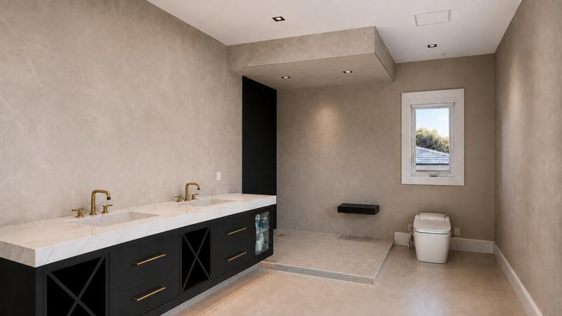
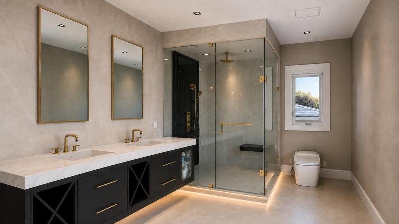
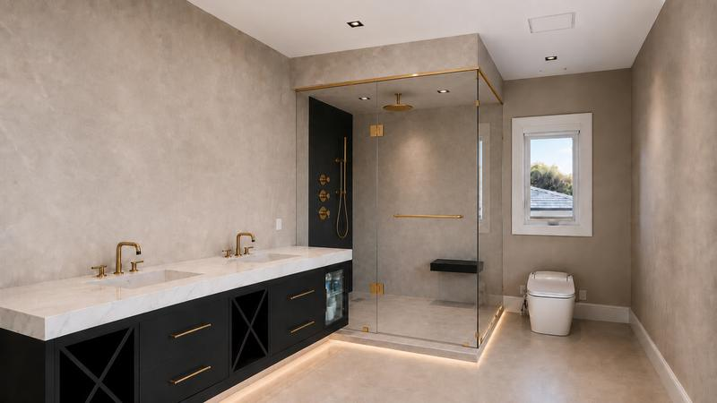
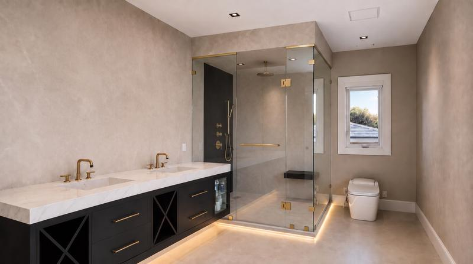
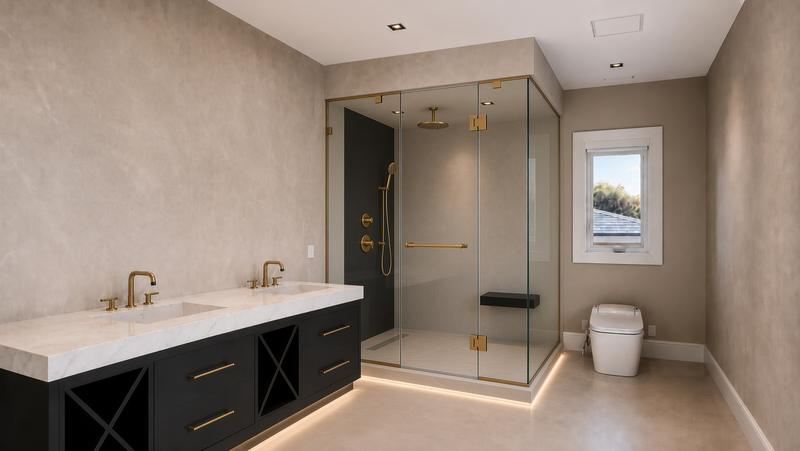
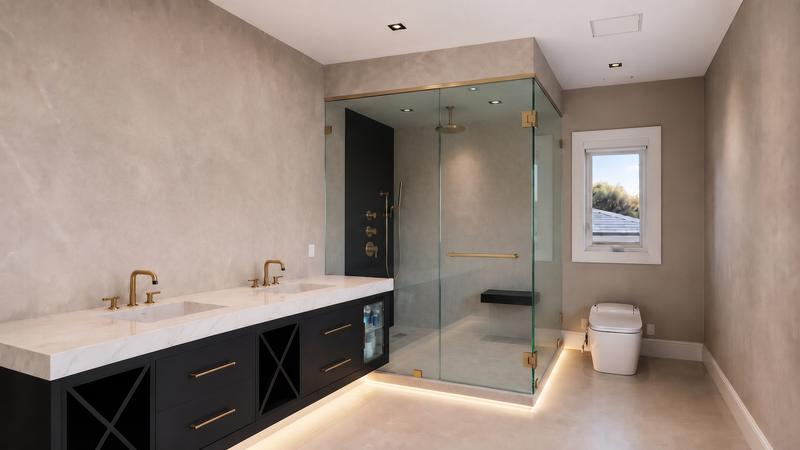
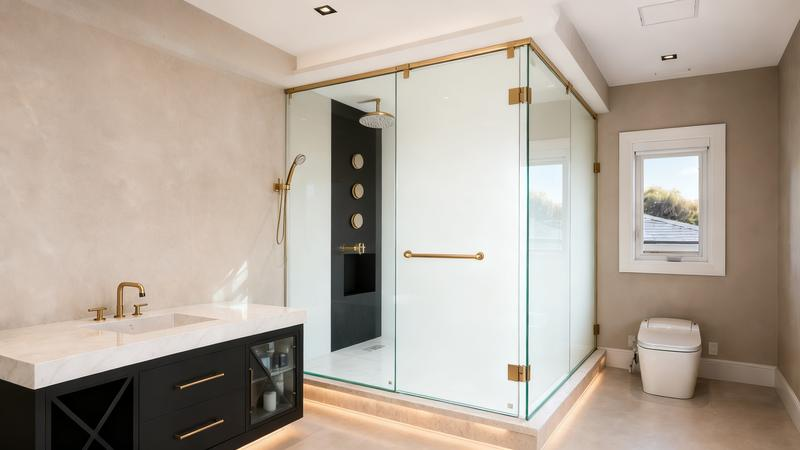

Glass bake-off — finding the AI model that adds a shower without redrawing the room
- Problem
- Elite View Glass sells frameless shower glass, and the goal was a render of a customer's own bathroom with the glass installed. That's a faithful edit, not a new picture: the camera, the vanity and every tile outside the shower have to survive untouched, or the render is useless for selling glass. Image models kept failing the same few ways — redrawing the room, tinting clear glass grey or green, swapping in the wrong handle, or returning the wrong shape.
- Approach
- Built a small local tool that runs one prompt across six image-editing models at once and lays the results side by side, each with a before/after slider. A picker assembles the prompt from the client's real catalog — glass types, hardware finishes, handles — so what runs is always what's selected. An analyze page uses Claude to derive and critique a prompt from a real before-and-after pair, and a findings page checks photos of real finished installs against the prompt's rules and tallies where they disagree.
- Decision
- Judge every model against the real finished install, not just the before photo: it measures how close a model got to the actual job rather than merely what it changed. Failures then turned into specific instructions: a product name like “Starphire” told the models nothing about colour, so the glass is described as identical to ordinary window glass seen face-on.
- Outcome
- After three prompt versions, gpt-image-2 was the only model that returned the exact source frame — no drift, no tint, all the hardware there — at about two and a half times the wait of the fastest model. The prompt work fed the shower-glass template in Reno Studio, and the tool documented API quirks along the way, including one model's undocumented prompt-length cap, pinned down by bisection.
- Stack
- Python (standard library only)
- KIE
- Anthropic Claude
- gpt-image-2
- Prompt design
The third round, side by side






